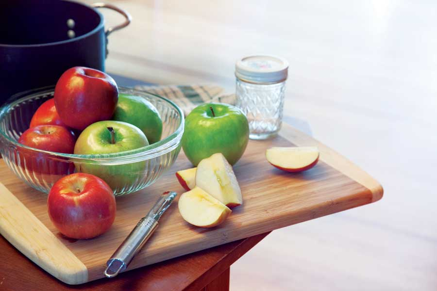

Who doesn’t love sweet, tangy apples? Plus, apples, applesauce and apple juice have been proven to have “whole body” health benefits, including protection against colon cancer, reduced cardiovascular risk, anti-cancer and antioxidant properties, and reduced effects of bad cholesterol. With these benefits - plus there are so many available flavors - who wouldn’t want to stock their pantry, root cellar or freezer with apples and applesauce?
Besides being a nutritious and filling snack, applesauce is a great fat-replacer in many baked goods. Using applesauce instead of butter or oil adds fiber and reduces calories in cakes, muffins and breads. And, because of its water content, applesauce will also keep your baked goods moist and fresh longer. A quart of homegrown and homemade applesauce is also much more frugal than even the cheapest store-bought vegetable oil. If you don’t grow apples, be sure to visit your nearest farmers market or U-pick orchard this fall, when abundance equals a bargain.
The easiest way to make applesauce is to core and quarter washed apples (no need to peel, but be sure to scrub thoroughly). Place the apples in a heavy pot with an inch of water. Cover and cook until the apples are soft. Run the softened apples through a food mill, food processer or blender until smooth. If the sauce gets too thick for the processor or blender to run smoothly, add a bit of the cooking water or unsweetened apple juice. Return the applesauce to a large pot. Season and sweeten to taste - use up to a half cup of sugar or one-third cup of honey, and up to 1 teaspoon of ground spices (e.g., cinnamon, nutmeg, allspice) for every 2 pounds of apples. For baking purposes, keep a couple of batches of unsweetened canned or frozen applesauce.
To can applesauce, keep it hot in the pot until ready. Fill the jars, leaving a quarter inch of headspace, and then process in a boiling water bath (pints for 15 minutes, quarts for 20 minutes).
To freeze applesauce, place the sauce in plastic bags, leaving some room for expansion. Laid flat, bags freeze and store easily.
Applesauce can be used to replace liquid fats (but not softened butter) in almost any baked good. Simply replace the melted butter or oil with an equal amount of applesauce. You may need to bake longer when using applesauce.
Try these four mouthwatering applesauce recipes:
Apple Cornmeal Cake with Brown Sugar Sauce
Molasses Spice Cake with Lemon Frosting
Cinnamon Raisin Bars with Vanilla Icing
Tropical Applesauce Muffins
|
 EMILY HELLER An apple a day, a different way: Try baking with applesauce to make healthier treats that have incredible texture. |
|
|